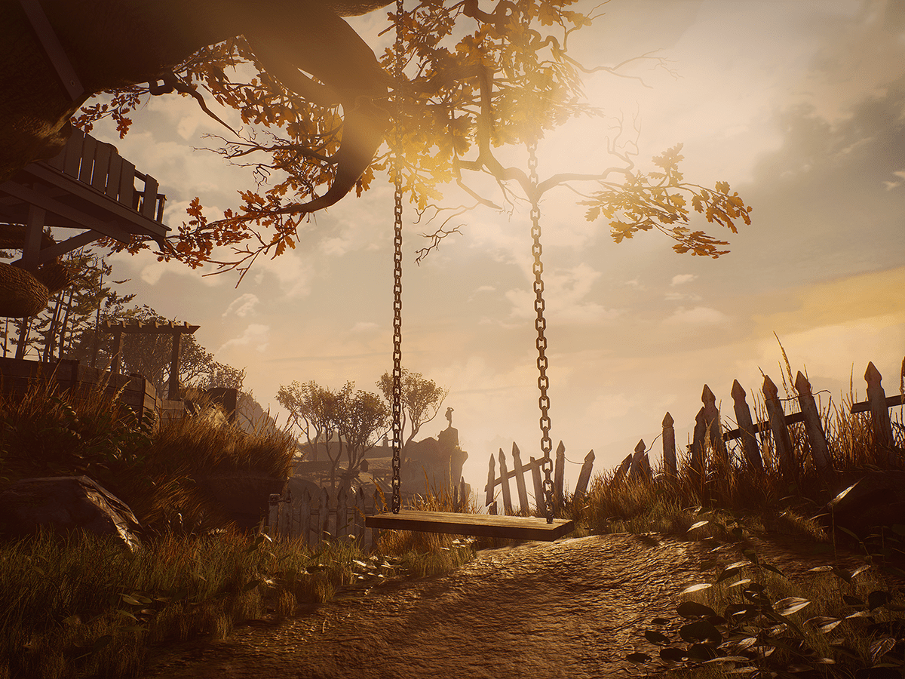

What Remains of Edith Finch é um jogo da Giant Sparrow, lançado em 2017. Ele narra uma visita de Edith Finch à misteriosa casa onde passou sua infância, deixada de herança à ela após a morte de sua mãe.

O que mais me cativou nesse jogo foi a narrativa, uma perfeita harmonia entre texto, vídeo e interatividade. O enredo também é maravilhoso, daqueles que, ao fim, se transformam em um sentimento dentro da gente.
A história é dividida em diversos contos, que narram a morte de cada membro da família Finch. Embora os contos sejam sobre morte, o texto, leve e poético, exalta a vida das personagens, nos mostrando rapidamente quem elas eram, mas com a profundeza suficiente para nos deixar um vazio ao fim de cada história.
Junto à narração, temos cenários cuidadosamente desenvolvidos, detalhados, que nos fazem acreditar que aquele lugar realmente existe e que estamos nele. A iluminação é muito bem trabalhada, varia com o período do dia e pontua muito bem o passar do tempo.
 Para completar a imersão, cada conto tem um modo de interação diferente, desde controlar um gato perseguindo um passarinho até a abrir latas de pêssego em calda. As escolhas feitas pelos desenvolvedores foram extremamente felizes.
Recomendo bastante What Remains of Edith Finch para quem quer parar para assistir uma ótima história. O jogo requer muito pouca intimidade com o controle (ou teclado/mouse), uma ótima opção para quem não tem costume de jogar vídeo game. Ele está disponível para PlayStation 4, Xbox One e Windows (via Steam) e custa menos que um Big Mac.